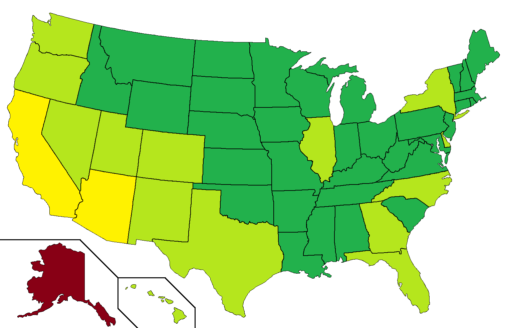

Live forecasts of the 2020 final election outcome with commentary begins at 18:00 EST on November 3, 2020, on Twitch. Until then, enjoy the pre-election forecasts!
In the model, light represents 'likely', moderate represents 'high probability', and dark represents 'called'. All times EST.
The election analysis uses the following terminology:
In the color scheme, light represents 'likely', moderate represents 'high probability', and dark represents 'called'.
In terms of methodology, this model essentially guesses the final results of the election based on the geographic distribution of results that are reporting so far and the historical partisan lean of that region. Because it analyzes historical partisan lean, it only works on elections for which there are only two major candidates: one Democrat and one Republican. The model is fundamentally biased for historical results, so there's a reasonable margin of error of about a point or so. The margin of error is typically higher when:
An example of a substantially different turnout pattern that causes the model to be off is the Texas Senate election in 2018, when Beto O'Rourke's candidacy caused a surge in Democratic turnout, while Texas also reported a lot of early vote that favored O'Rourke.
This models are currently being run for statewide elections in all states with the exception of Alaska. The following map shows how accurately we anticipate the models to perform:

Addendum about mail-in voting. Of course, this year is 2020, and the coronavirus pandemic is upending everything, even how accurate the models will be on election night. This year, a large number of absentee ballots are expected, and polls suggest that absentee ballots will tend to favor Democratic candidates. Hence, if a pattern arises where the in-person votes are reported first, and mail-in votes are reported later, then we could have a situation where the Republicans have an early lead in the results reported. This is not something that we can easily detect and correct for with a model, because we do not know which votes being reported are mail-in or in-person, and we do not have historical data to estimate how much of that mail-in vote will be Democratic. My models are good for breaking down the results geographically, but not for mail-in or early voting. Something similar happened in Arizona in 2018, when my models were unable to detect a surge in late mail-in ballots for the Democrats based on geography alone. However, given the urban-rural split we are seeing between Democrats and Republicans, we may be able to forecast the final outcome a bit better than the raw vote count, but it will not be foolproof. Hence, we are expecting that the models perform a bit more poorly than we would otherwise during a typical election cycle.